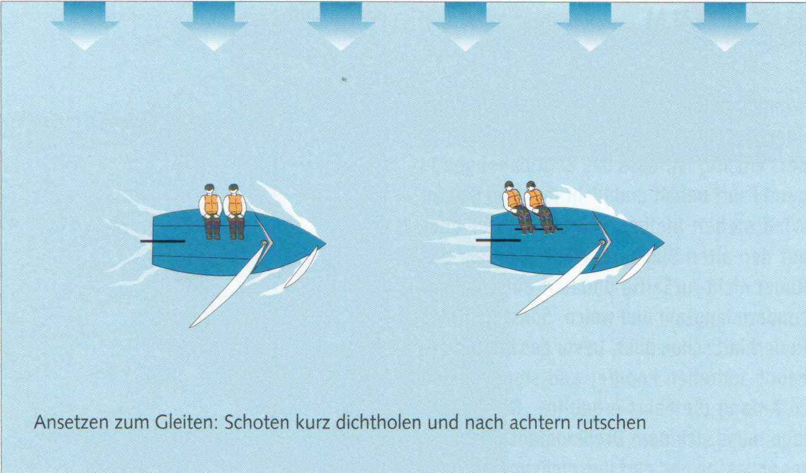

Все современные швертботы (Jollen) — по крайней мере на полных курсах (Raumschots-Kursen) — выходят на глиссирование. При свежем бризе они медленно выходят на собственную носовую волну (Bugwelle), кормовая волна (Heckwelle) отрывается и уходит за корму. Смоченная площадь днища уменьшается, соответственно снижается сопротивление трения. И вдруг лодка ощутимо ускоряется. Она глиссирует (gleitet) и может теперь развивать скорость, в несколько раз превышающую скорость водоизмещающего режима (Rumpfgeschwindigkeit).
Чувствуешь, когда швертбот готов выйти на глиссирование, — давление на руль (Ruderdruck) ослабевает. Экипаж (Crew) сдвигается дальше в корму, чем обычно, чтобы разгрузить бак (Vorschiff). Обычно достаточно коротко, но плавно выбрать гика-шкот (Großschot), чтобы лодка перешла из водоизмещающего режима (Verdrängerfahrt) в глиссирующий (Gleitfahrt).
Давление на руль теперь полностью исчезает.
Обычно швертбот начинает глиссировать в порыве (Bö). Когда порыв ослабевает, немного приводятся (anluven) и осторожно выбирают гика-шкот. Благодаря этому скорость вымпельного ветра (scheinbarer Wind) возрастает и лодка продолжает глиссировать. В следующем порыве снова слегка уваливаются (abfallen) и немного потравливают шкоты (Schoten).
Условие глиссирования — лодка должна идти прямо или почти прямо. Поэтому трапеция (Trapez) позволяет глиссировать значительно дольше — или иногда вообще впервые. Как только швертбот сильнее кренится (krängt), то есть эффективная площадь паруса уменьшается, он вернётся в водоизмещающий режим.

► Причины, препятствующие глиссированию:
• Экипаж сидит слишком далеко впереди.
• Грот (Großsegel) сильно закручивается (Twist) (нужно сильнее набить оттяжку гика (Baumniederholer)).
• Шверт (Schwert) не поднят — хотя бы наполовину.